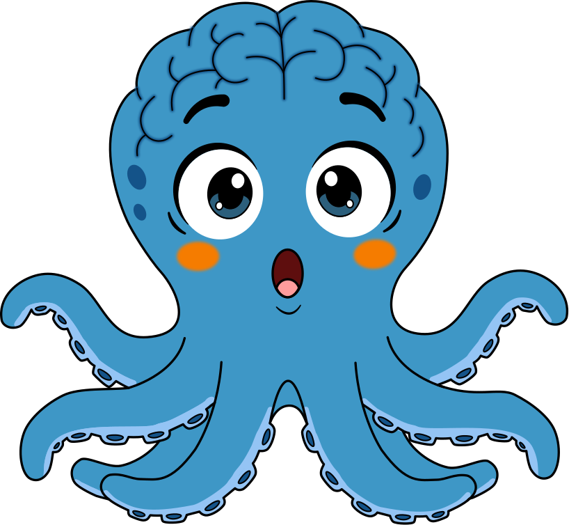

Programa Adulto VitalQue tu papá repita la misma pregunta no significa lo que crees
¿Tu papá te preguntó lo mismo tres veces en una tarde? ¿A ti se te empieza a olvidar dónde dejaste las llaves más seguido que antes? Eso no significa que ya sea demasiado tarde. Significa que es un buen momento para actuar.
Por qué el cerebro empieza a cambiar años antes de que se note
El deterioro cognitivo no aparece de un día para otro a los 70 años. Es un proceso progresivo y silencioso que, según la evidencia, puede empezar a gestarse desde los 50 — a veces antes — mucho antes de que alguien note el primer síntoma.
Los científicos usan el concepto de reserva cognitiva para explicar por qué dos personas con el mismo desgaste biológico en el cerebro pueden vivir esto de forma tan distinta: una muestra síntomas años antes que la otra. La diferencia está en cuánto "colchón" construyó cada cerebro con actividad, movimiento y estimulación a lo largo de la vida.
La buena noticia es que ese colchón se sigue pudiendo construir incluso después de los 70. No es un tema exclusivo de la vejez — es un tema de toda la adultez, y cuanto antes se empieza a cuidar, mejor.
Qué sí está en tus manos
Movimiento con reto mental al mismo tiempo. No se trata solo de caminar, ni solo de hacer sudokus por separado: la evidencia más sólida está en combinar los dos al mismo tiempo, por ejemplo caminar mientras se resuelve algo mentalmente. Esta semana, prueba una caminata corta en la que le hagas a tu papá o mamá una pregunta que tenga que pensar mientras camina.
Vínculo social activo. Una conversación real, no solo estar en el mismo cuarto viendo televisión, exige memoria, atención y lenguaje al mismo tiempo. Llamar o visitar con la intención de conversar, no solo de acompañar, cuenta como entrenamiento.
Mantener un idioma que ya se domina. Si tu papá, mamá o tú ya hablan inglés u otro idioma, usarlo activamente — no solo entenderlo pasivamente — parece ayudar a sostener la reserva cognitiva.
Esto no es solo sentido común
Varios metaanálisis con adultos mayores han encontrado que el entrenamiento que combina movimiento y reto cognitivo al mismo tiempo mejora la función ejecutiva y el estado de ánimo más que el ejercicio físico o el reto mental por separado. No es una corazonada: es un hallazgo que se repite en distintos estudios con cientos de participantes.
Por eso el Programa Adulto Vital no promete curar ni prevenir nada. Nuestro objetivo es mantener y proteger la función cognitiva que ya existe, con sesiones semanales de movimiento y reto mental simultáneo, calibradas según la capacidad de cada persona.
Si te identificaste con esto: que se le olvide algo o que repita una pregunta no significa que algo esté mal ni que sea tarde. Significa que es buen momento para actuar, con tu papá, tu mamá o contigo mismo.
👉 Conoce el Programa Adulto Vital y resuelve tus dudas sin compromiso: escríbenos por WhatsApp al 301 494 6120.